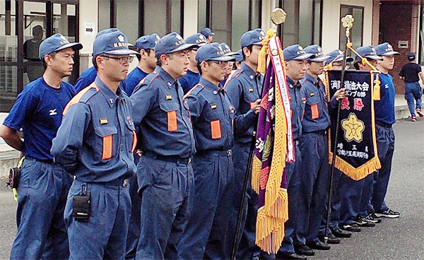

| 第28回埼玉県消防操法大会 第1分団1部1班が優勝！  |
 |
※ポンプ車の部で優勝した川島町消防団にあっては、11月8日(土)に東京都江東区の東京臨海広域防災公園で開催される「第24回全国消防操法大会」に埼玉県代表として出場いたします。 |
||||||||||||||||||||||||
 第28回埼玉県消防操法大会
第28回埼玉県消防操法大会第26回埼玉県消防協会埼玉西部支部消防操法大会（埼玉西部支部大会）で、小型ポンプの部で優勝した第1分団1部1班が、平成26年8月23日（土）に鴻巣市の埼玉県消防学校で開催される第28回埼玉県消防操法大会に出場します。飯能消防団一致団結し、感謝の思いを込めて全力で挑みます。ご声援よろしくお願いいたします。
| 目的 | 消防団員の技術の向上と士気の高揚を図り、もって消防活動の充実発展に寄与することを目的とする。 |
| 日時 | 平成26年8月23日（土）午前8時15分（開会）雨天決行（予備日は平成26年8月24日（日）競技のみ） |
| 会場 | 埼玉県消防学校（埼玉県鴻巣市袋30番地） |
飯能消防団第1分団1部1班 （指揮者 / 小川 賢亮・1番員 / 石毛 裕輔・2番員 / 加藤 洋平 3番員 / 永岡 大祐・補助員 / 細田 智之） |
奇数・・・1コース 偶数・・・2コース |
※操法大会とは、消防団員がポンプ車や小型ポンプを用いて基本的な操作方法を習得するための訓練の一つです。この訓練は、ポンプやホースなどの器具操作を安全、確実かつ迅速に、更に規律正しくできるかを競うものです。
※消防操法の種類は、車両のポンプを使用した「ポンプ車操法」、可搬ポンプを使用した「小型ポンプ操法」があります。